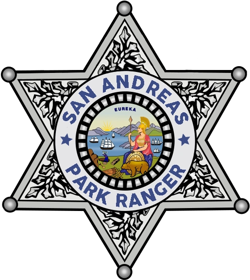

San Andreas State Park Rangers
Welcome to the San Andreas State Park Rangers, where we bravely protect the forests, mountains, wildlife, and the occasional drunk hiker who thought camping near a cougar den was a good idea.
We patrol the wildest corners of the state—places where cell signals fear to tread and people forget basic survival instincts. Whether it's chasing illegal hunters, wrangling feral tourists, or investigating why someone thought spray-painting a raccoon was “art,” we’re on the front lines of nature’s last defense.
This isn’t your average city beat—no coffee shops, no traffic lights, just trees, danger noodles (snakes), and enough fresh air to reset your soul or your sanity.
Whether patrolling city streets, responding to 911 calls, engaging in high-stakes pursuits, or participating in community events, our duty is to serve with integrity, courage, and accountability.
What We Do
- Enforce state conservation laws and wildlife protection
- Respond to campground incidents, poaching, and illegal off-roading
- Track missing persons (and egos) lost in the wilderness
- Handle aggressive wildlife (both animals and tourists)
- Patrol state parks, forests, mountain ranges, and restricted zones
- Collaborate with law enforcement for search & rescue or backwoods standoffs
Requirements
- Must not be allergic to dirt, mosquitoes, or sarcasm
- Able to identify a tree from a power pole
- Comfortable spending 80% of your shift explaining that “No, you cannot feed the bears”
- Have basic survival skills and unshakable patience
- Must respect nature... even when it tries to kill you
“We don’t just hug trees. We protect them—with tasers, trackers, and occasionally bear spray.”
Transfer only through invitation or recommendation.
Contact SASPR Management